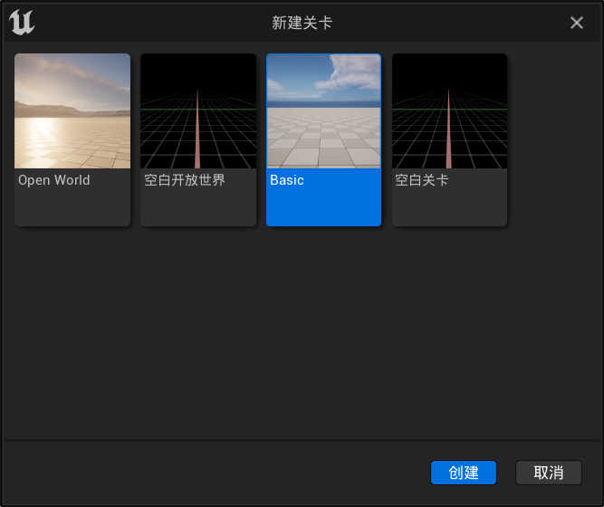

进行游戏所需要接触的基本流程认识.
继续使用上一步 快速入门 建立的 第三人称模板 工程
关卡/地图
UE 中关卡称为 Map, 作为游戏直观的实际入口
官方文档: 使用关卡
避免模板中默认的关卡影响入门认知, 我们需要创建一个空白关卡
文件 -> 新建关卡 -> Basic

建立一个拥有基础场景和光照的关卡 Basic
同样的, 点击 运行关卡
虽然我们并没有对地图和角色进行任何设置
却会生成一个与 模板关卡 一样的可控制角色
相关功能由模板项目预先在配置文件中设定好的值所控制
在修改配置之前需要保存这个临时关卡
文件 -> 保存当前关卡
项目设置
项目设置 作为当前工程的 全局设置 而存在
打开当前项目的配置页面
编辑 -> 项目设置
这里储存着整个项目所需的绝大部分基础配置和数据
供项目下的所有关卡使用
项目设置中涉及到游戏初始化的部分:
项目 -> 地图和游戏模式
- 默认模式
- 默认游戏模式
Global Default Game Mode- 关卡中没有特别指定时使用的默认模式
- 默认游戏模式
- 默认地图
- 编辑器开始地图
Editor Startup Map- 作用于编辑器, 决定项目在打开时编辑器加载的关卡
设置为正在开发的关卡就比较方便
- 作用于编辑器, 决定项目在打开时编辑器加载的关卡
- 游戏默认地图
Game Default Map- 作用于游戏, 暂时不用管
- 编辑器开始地图
可以看到在这个模板工程中 默认游戏模式 指定的是 BP_ThirdPersonGameMode
BP_ThirdPersonGameMode是工程模板中提供的游戏模式
指定了带控制逻辑的角色对象
这里将 默认游戏模式 重新指定为 Gamemode
Gamemode为引擎预定义的一个仅有默认值的简易游戏模式
这时再 运行关卡
就不会生成可操作角色, 而是与编辑器中一样是一个飘着的观察者视角
世界场景设置
世界场景设置 作为当前关卡的 本地设置 而存在
在关卡设置中, 可以覆盖或重载某些项目设置以创造独特的关卡
呼出该面板
窗口 -> 世界场景设置
面板中同样有个配置:
- 游戏模式
- 游戏模式重载
Default Game Mode- 默认值为
None设置后会覆盖 项目设置 中的 默认游戏模式
- 默认值为
- 游戏模式重载
将 游戏模式重载 再指定为 BP_ThirdPersonGameMode
运行关卡 时会再次生成可操作角色
Pawn
此时 游戏模式 中的 默认Pawn类 决定了玩家以哪个 角色 进行游戏
- 选中的游戏模式
- 默认Pawn类
Default Pawn Class- 此时值为
BP_ThirdPersonCharacter这是一个 角色蓝图
蓝图中包含一个配置好动画的人形骨骼
一个摄影机和一个负责检测碰撞的胶囊体
同时还有对按键操作与输入事件的处理逻辑角色的绝大部分功能在这里装配
- 此时值为
- 默认Pawn类
既然找到了游戏中玩家实际会操作的对象, 我们也可以不通过 游戏模式 来获得可操作 角色
在 游戏模式重载 处点击 重设 将值设为 None
从 内容浏览器 中将 BP_ThirdPersonCharacter 拖进场景中 放置
点击这个被拖进来的对象, 在 细节 栏选择 通用 过滤标签
然后找到
- Pawn
- 自动控制玩家
Auto Possess Player- 默认值为
已禁用在这里可以手动指定该 Pawn 所分配至的玩家位置
- 默认值为
- 自动控制玩家
设置 自动控制玩家 为 玩家0
运行关卡 时就会以它为操作对象
游戏就这么开始
从表层且简化的角度来认识, UE的游戏启动顺序大概是这样的:
- 读取 项目设置
- 创建游戏实例
GameInstance - 获得关卡对象
- 创建游戏实例
- 读取 世界场景设置
- 创建关卡并加载容器内的 Actor
- 获得游戏模式对象
GameMode
- 读取 游戏模式 与其下属的 功能类*
-
GameMode的默认功能类:PlayerControllerDefaultPawnSpectatorPawnHUDGameStatePlayerState
-
- 加入玩家
- 给玩家分配控制器
PlayerController - 控制器类获取可供操控的 Pawn
DefaultPawn- 如果是旁观者则分配
SpectatorPawn
- 如果是旁观者则分配
- 加载 HUD
HUD
- 给玩家分配控制器
- 进行游戏
GameMode控制整个关卡的逻辑, 作为玩法层级存在- 游戏数据
GameState管理着当前关卡的相关数据
- 游戏数据
- 玩家通过
PlayerController控制所属的Pawn进行游戏- 玩家数据
PlayerState管理着当前玩家的相关数据
- 玩家数据
-
同一个游戏内, 每个玩家拥有专属的
PlayerController
控制器同一时间只能操作一个Pawn
Pawn有可能死亡或重生
控制器也可以临时切换当前控制的Pawn, 比如驾驶载具
- 结束游戏
- 当达到条件*时, 游戏结束, 销毁相关对象
-
可能的条件:
- 触发胜利/失败
- 切换关卡
- 退出游戏